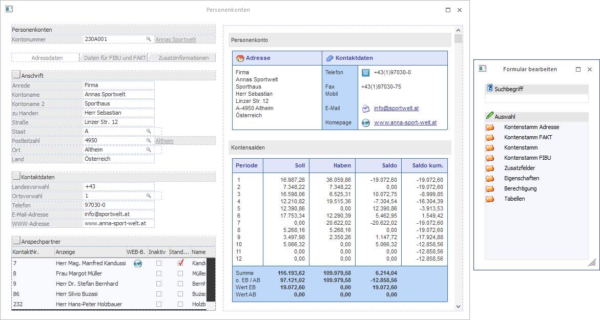
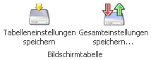

Mit Hilfe des Buttons "Formular bearbeiten", welcher bei der Nutzung von individuellen Formularen zur Verfügung steht, kann das Fenster "Formular bearbeiten" aufgerufen werden.
Neben der Darstellung dieses Fensters wird die aktuell verwendete Vorlage in einen Bearbeitungsmodus versetzt.
Bearbeitungsmodus

Im Bearbeitungsmodus sind folgende Arbeiten möglich:
ü In der Vorlage können Felder und Tabellen per Drag & Drop verschoben werden.
Hinweis
Das Verschieben von Buttons, Registern, Überschiften, Grafiken, OIF-Elementen, etc. ist nicht möglich. Zusätzlich muss das Hauptfeld (z.B. bei Vorlagen aus dem Bereich "Stammdaten" die jeweilige Nummer) immer das erste Element in der Vorlage sein und Tabellen bzw. RTF-Textfelder am Ende stehen.
ü Aus der Vorlage können Felder und Tabellen per Drag & Drop (in das Fenster "Formular bearbeiten") entfernt werden.
Hinweis
Das Löschen des Hauptfelds bzw. von Buttons, Registern, Überschiften, Grafiken, OIF-Elementen, Muss-Feldern, etc. ist nicht möglich.
ü In die Vorlage können neue Felder und Tabellen per Drag & Drop aus dem Fenster "Formular bearbeiten" hinzugefügt werden.
Formular bearbeiten
In diesem Fenster können aus dem jeweiligen Datenbereich die Felder bzw. die Elemente gesucht und übernommen werden, die für das Verändern von Vorlagen benötigt werden.

Ø Suchbegriff
An dieser Stelle kann durch die Eingabe und Bestätigung eines Suchbegriffs in den zur Verfügung gestellten Datenbereichen nach passenden Einträgen gesucht werden. Durch das Entfernen und Bestätigen des (leeren) Suchbegriffs werden wieder alle Einträge in der Datentabelle angezeigt.
Hinweis
Es handelt sich hierbei um eine Volltextsuche, d.h. durch die Eingabe von "leit" würde das Feld "Postleitzahl" gefunden werden.
Ø Auswahltabelle
Je nach Vorlagentyp werden in der Tabelle unterschiedliche Datenbereiche zur Verfügung gestellt. Durch die Anwahl des Ordnersymbols können die Bereiche geöffnet und Felder in die Vorlage übernommen werden.
Die Übernahme eines Felds erfolgt dann per "Drag & Drop" in das individuelle Formular.
Hinweis
Sobald ein Feld übernommen wurde wird es in der Auswahltabelle nicht mehr zur Verfügung gestellt. D.h. jedes Feld kann nur 1x in der Vorlage vorkommen.
Tabellenbuttons

Ø Tabelleneinstellungen speichern
Die Spalten einer Tabelle können grundsätzlich an beliebige Positionen verschoben, bzw. in der Breite entsprechend angepasst werden. Durch Anwahl des Buttons "Tabelleneinstellungen speichern" werden die Einstellungen benutzerspezifisch gespeichert und bei dem nächsten Aufruf des Programmpunktes wieder vorgeschlagen.
Ø Gesamteinstellungen speichern
Im Gegensatz zu "Tabelleneinstellungen speichern" können mit "Gesamteinstellungen speichern" mehrere Tabellenaufbauten gespeichert und nach Wunsch geladen werden. Zusätzlich werden Sonderfunktionen der Tabelle (z.B. "Spalte gruppieren") ebenfalls bei der Speicherung bedacht.
Button
Ø Ende
Die Bearbeitung des Formulars wird geschlossen. Ob eine Speicherung der Änderungen erfolgen soll wird über den Button "Formular speichern" definiert.